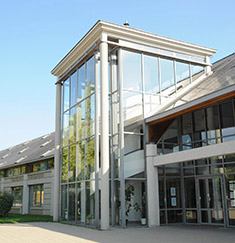
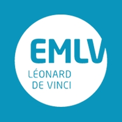
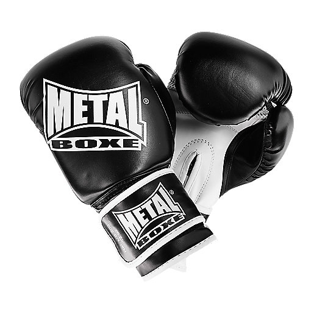
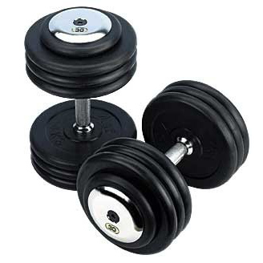
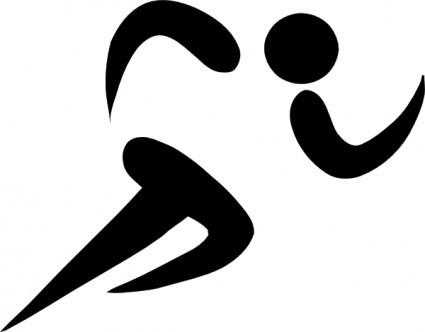

I/ Études
J'ai étudié 7 ans dans le collège-Lycée Maurice Rondeau ( Top 10 dans le département Seine-et-Marne ).
Diplômes obtenus :
- -Brevet des collèges - mention : "Très bien"
- -Baccalauréat Scientifique - mention : "Bien"
LienMauriceRondeau

Je suis actuellement en 1ère année à l'École de Management Leéonard de Vinci EMLV situé à la Défense au pôle Léonard De Vinci ( clasée 2ème école de commerce post-bac en France d'après l'étudiant )
LienEMLV

II/ Sports
Passionné par le sport, j'en ai fait toute ma vie et de tout type. Collectifs, individuels, de combats, de force, de précision, d'endurance.
Sports que je pratique actuellement
- Kickboxing - depuis 4 ans
- Musculation - depuis 4 ans
 
Sports pratiqués
- Athlétisme - pendant 3 ans
- Judo - pendant 2 ans
- Tennis - pendant 2 ans
- Football - pendant 2 ans
- Natation - pendant 1 an
- Tir à l'arc - pendanr 1 an
